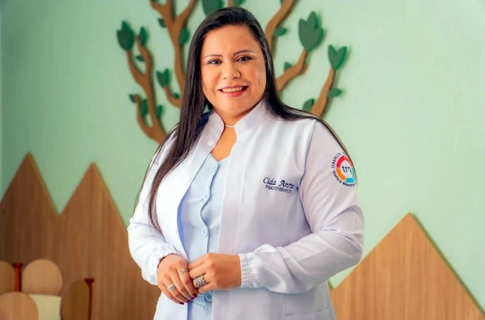
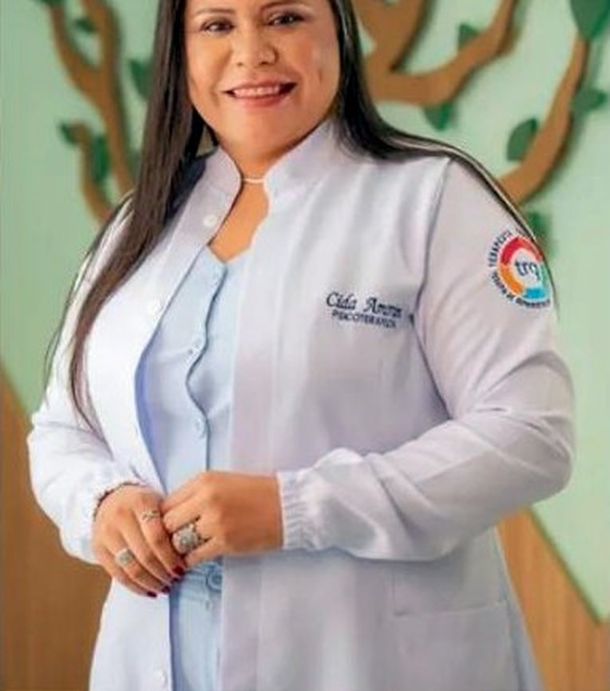

Serra Talhada
Consultório no Centro, na Rua Enock Ignácio de Oliveira, 1294.
Especialista em Terapia de Reprocessamento Generativo (TRG). Um caminho para olhar para o que dói, ressignificar e seguir mais leve. Atendimento presencial em Serra Talhada - PE e online.
Role a página e veja: a terapia é um espaço para transformar a forma como você se relaciona com as suas memórias e emoções.

trgTerapeuta especialista em TRGA TRG é uma abordagem terapêutica que trabalha o reprocessamento de memórias e emoções ligadas às experiências que marcaram a sua vida, ajudando você a olhar para elas de um jeito novo.
Algumas situações que costumam levar as pessoas à terapia. Se você se identificou, conversar pode ser o primeiro passo.
Cada caso é avaliado individualmente na conversa inicial.
Consultório no Centro, na Rua Enock Ignácio de Oliveira, 1294.

● ao vivoOnlineO mesmo cuidado, com a comodidade de fazer a sessão de casa ou de qualquer cidade.
“Transforme sua vida: o primeiro passo é decidir cuidar de você.”
Sou psicoterapeuta e especialista em Terapia de Reprocessamento Generativo. Atendo em Serra Talhada e online, e sigo sempre buscando atualização em congressos e imersões de saúde mental para oferecer o melhor cuidado.
Avaliações de pessoas que viveram essa transformação e recomendam o atendimento.
A Terapia de Reprocessamento Generativo é uma abordagem terapêutica que trabalha o reprocessamento de memórias e emoções ligadas a experiências marcantes, para que você possa olhar para elas de um jeito novo.
É só chamar no WhatsApp (87) 99606-2093 e escolher o melhor horário.
Sim. Atendo presencialmente em Serra Talhada - PE e também online, por videochamada.
Depende de cada pessoa e de cada história. Isso é conversado no início do processo.
Sim. Tudo o que é conversado em sessão é tratado com total sigilo e respeito.
Os valores são informados pelo WhatsApp, junto com os horários disponíveis.
Rua Enock Ignácio de Oliveira, 1294
Centro, Serra Talhada - PE
Dê o primeiro passo. Me envie uma mensagem e vamos conversar.